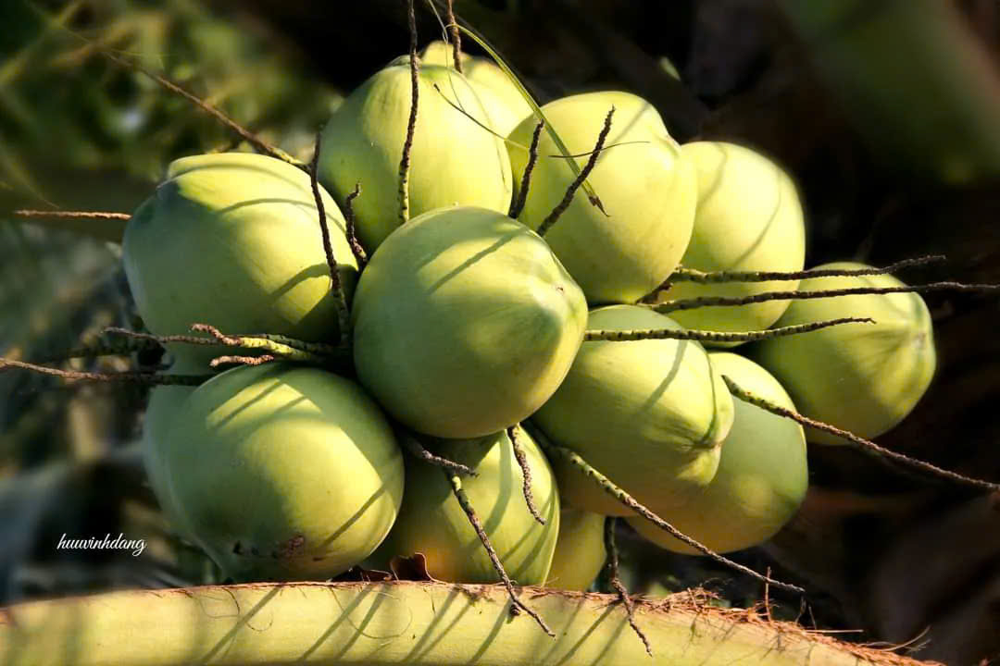
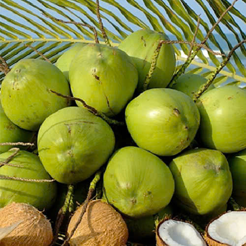
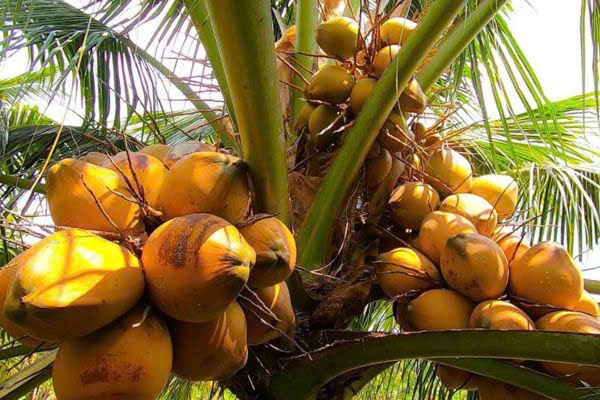

Giới Thiệu Các Loại Dừa

Dừa Xiêm Xanh
Dừa xiêm là giống dừa phổ biến nhất ở Bến Tre , chủ yếu dùng để lấy nước giải khát .
- Trái nhỏ, vỏ mỏng, nước ngọt
- Thích hợp để uống tươi
- Chứa nhiều khoáng chất tự nhiên
- Cung cấp nước giải khát tự nhiên
- Giúp thanh nhiệt và làm mát cơ thể
- Hỗ trợ cải thiện tiêu hóa

Dừa Dứa
Đây là loại dừa giống nhỏ, nhiều trái. Da quả màu xanh giống dừa xiêm nhưng khác là nước và cơm dừa có mùi thơm của dứa, mùa nắng thơm hơn, nước cũng ngọt hơn. Nước dừa ngọt và mát. Tại Việt Nam, dừa được trồng ở một số vùng đồng bằng sông Cửu Long, đặc biệt là ở Bến Tre.
- Mùi thơm đặc trưng như lá dứa
- Thích hợp để làm nước giải khát
- Hàm lượng dinh dưỡng cao
- Chế biến thành nước uống bổ dưỡng
- Giúp làm đẹp da, chống lão hóa
- Giảm căng thẳng và mệt mỏi

Dừa Ta(Dừa Khô)
Là tất cả những loại dừa đã già, vỏ thường đổi màu sang màu nâu nhạt
- Dùng để làm dầu dừa, nước cốt dừa
- Cùi dừa dày, giàu chất béo
- Thời gian bảo quản lâu
- Dùng để chế biến các món ăn
- Làm nguyên liệu cho sản phẩm chăm sóc da
- Dùng trong ngành công nghiệp làm mỹ phẩm

Dừa Lửa
Dừa lửa hay còn gọi là dừa Xiêm đỏ hiện là một loại dừa Xiêm được người dân trồng dừa trên cả nước rất ưa chuộng do có ưu điểm rất sai trái, những trái dừa san sát nhau như sâu chuỗi, vị ngọt. Bên cạnh đó dừa Xiêm đỏ có thời gian thu hoạch chỉ bằng một nửa của dừa ta.
- Giải khát, làm mát cơ thể
- Vỏ có màu vàng cam hoặc đỏ, quả nhỏ, nước ngọt đậm.
- Quả nhỏ, nước ngọt đậm.
- Tăng cường hệ miễn dịch
- Cung cấp năng lượng tự nhiên
- Dùng để uống nước, trang trí cảnh quan.